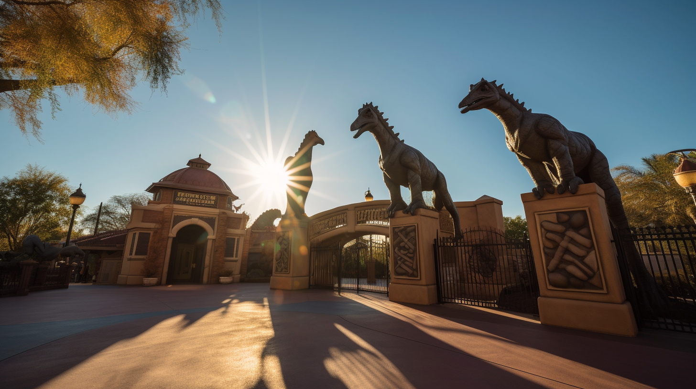

Wo sind wir?

Zoo Übersicht
Die Vulkaninsel ist ein wildes und atemberaubendes Paradies im Ozean. Die Landschaft ist von satten Grüntönen, tiefen Schluchten und beeindruckenden Felsen geprägt. Inmitten all der Schönheit erhebt sich ein majestätischer Vulkan, der seine rauchende Spitze in den Himmel reckt. Der Klang von Wasserfällen und das Gebrüll von Dinosauriern vervollständigen die faszinierende Atmosphäre.